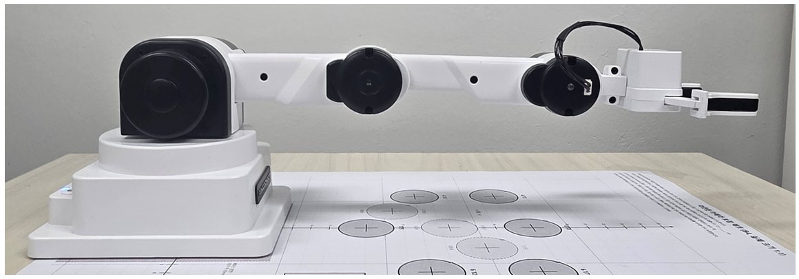
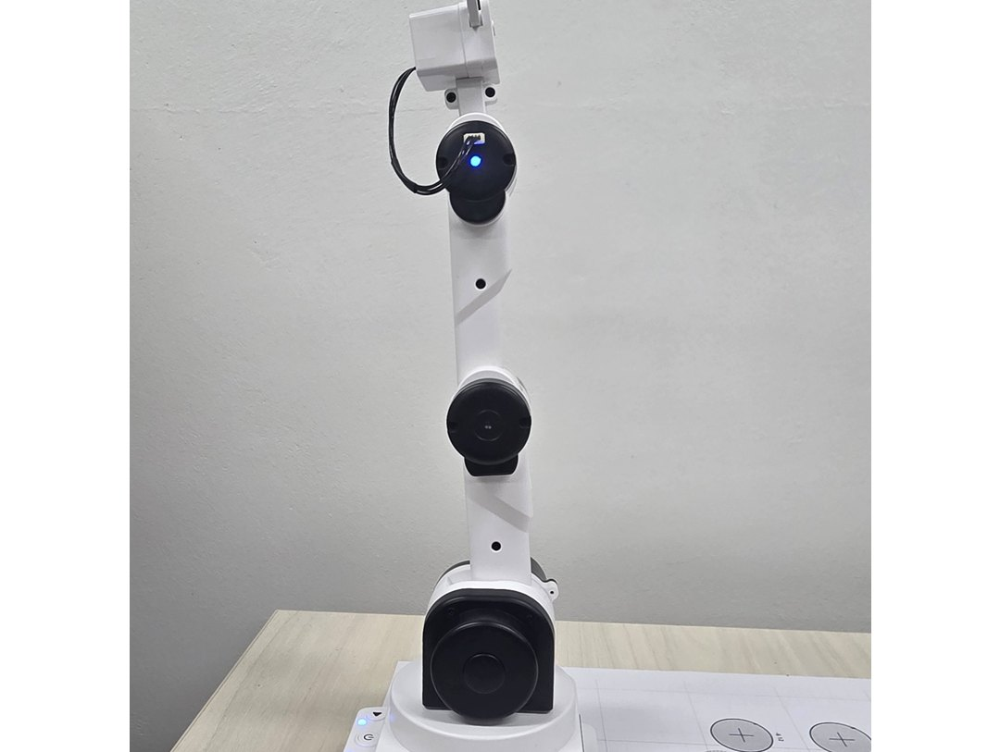
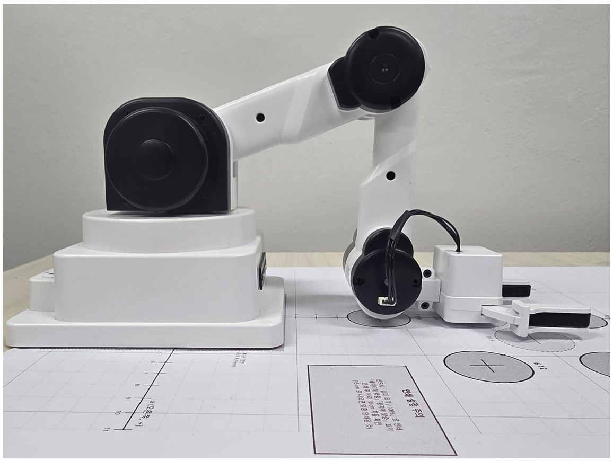
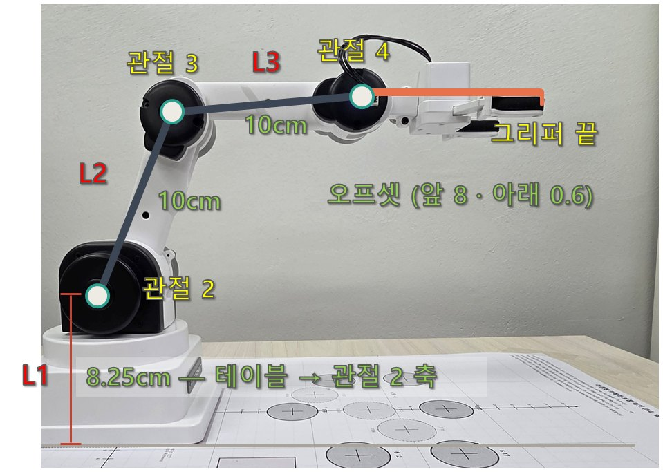
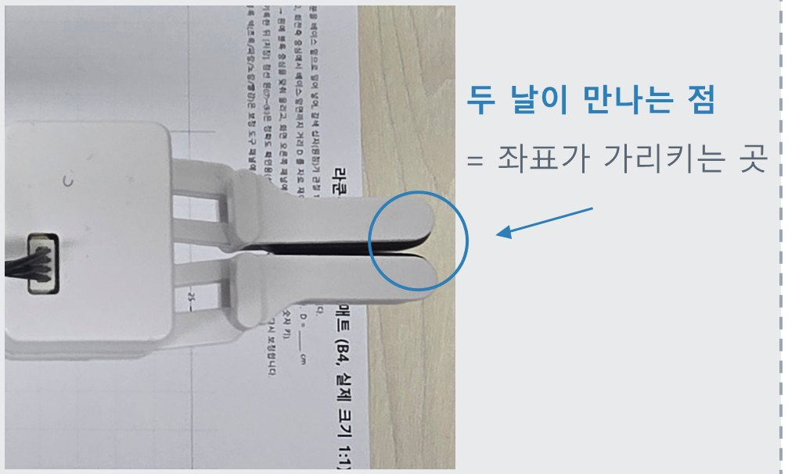
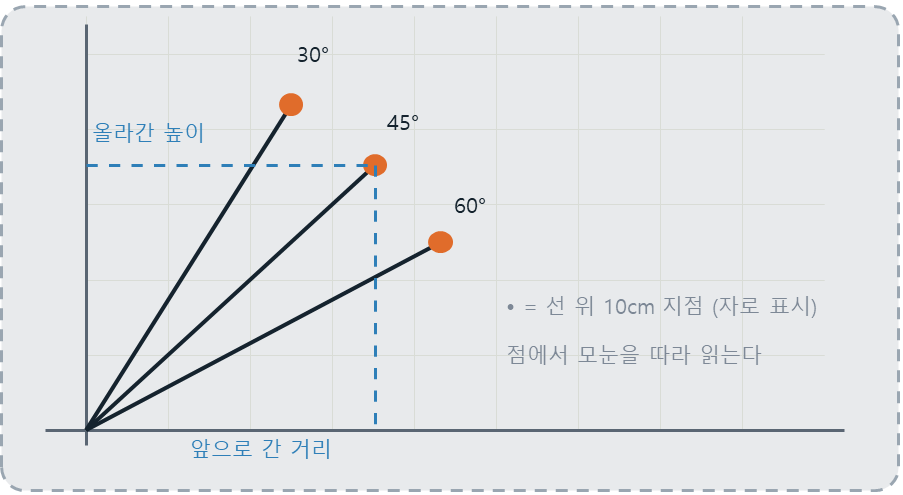
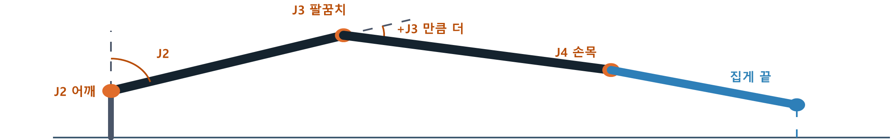
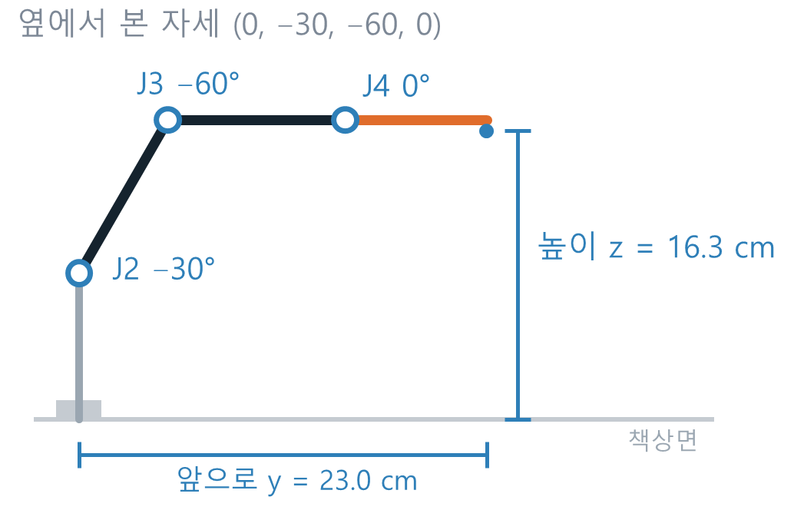

주제 2 · 2차시
각도에서 좌표로
로봇은 제 손끝이 어디인지 어떻게 아는가 — 순기구학
오늘의 각도 제어 명령어 명령어
# ── 지금까지 배운 명령 ── encoder(-1) # 관절 각도 4개 읽기 (주제 1에서 썼다) xyz() # 집게 끝 좌표 읽기 (주제 1에서 썼다) # ── 오늘 새로 배우는 명령 ── degree_to(j1, j2, j3, j4, 속도) # 네 관절을 한 번에 그 각도로 degree_to(관절번호, 각도) # 한 관절만 콕 집어서 wait(ms) # 다음 명령까지 잠깐 기다리기 beep() # “삑” — 동작이 끝났다는 신호음
주제 1에서는 로봇의 상태를 읽기만 했다 — encoder 로 각도를, xyz 로 좌표를.
오늘부터는 로봇에세 특정한 동작을 시킬 수 있다.
degree_to 에 각도를 넣으면 팔이 그 자세를 만든다.
교사 노트
참고 교재(비글) 형식의 명령어 카드입니다. '읽기 → 시키기' 대비만 30초로 짚고 실습으로 넘어가세요.
실행해보기 실습 1 · 그대로 실행
degree_to 는 관절 네 개의 각도를
한 번에 정하는 명령이다.
from roboid import * raccoon = Raccoon() raccoon.degree_to(0, 0, 0, 0, 30) # 위로 쭉 (Zero) raccoon.beep() wait(1000) raccoon.degree_to(0, -20, -70, 0, 30) # 앞으로 숙인 자세 raccoon.beep() wait(1000) raccoon.degree_to(1, 45) # 관절 1만 +45도 raccoon.beep() wait(1000) raccoon.degree_to(0, -10, -140, 60) # Home 복귀 raccoon.dispose()
[관찰해보기]
코드를 실행하면 팔이 어떤 순서로 움직이는지?
숫자 네 개 중 몇째 숫자가 어느 관절을 움직이는지?
(마지막 숫자 30 은 속도이다.)
안전 — 실행 전 팔 주변 30cm 를 비우고, 속도 30 은 그대로 둔다.
degree_to(관절번호, 각도) 처럼 두 개만 쓰면 그 관절 하나만 움직인다
교사 노트
개념 설명 없이 바로 실행시킵니다. "몇째 숫자가 어느 관절인가"는 학생이 숫자를 바꿔 보며 스스로 찾게 두세요 — 다음 미션의 준비 운동입니다. Zero(0,0,0,0)는 팔이 수직으로 서므로 뒤 공간도 확인하게 하세요.
숫자를 바꿔 세 자세 만들기 [미션] 각도만 바꿔서
from roboid import * raccoon = Raccoon() raccoon.lock_horz() raccoon.degree_to(0, -10, -140, 90) # ← 이 네 각도를 바꾼다 wait(1000) print(raccoon.xyz()) # 집게 끝 좌표 (x, y, z)
| 규칙 | 왜 |
|---|---|
| 한 번에 한 관절씩 바꾸고 실행 | 어느 숫자가 무엇을 바꿨는지 알 수 있다 |
| 3번 미션은 10도씩 줄여 가며 천천히 | 책상에 박기 전에 멈출 수 있다 |
| 다시 실행한 횟수를 센다 | “로봇은 몇 번 만에 가는가”와 비교하게 된다 |
| 오프셋 | 전방 8 / 아래 0.6 |
집게 끝을 가장 멀리 앞으로 — y 를 최대로
집게 끝을 가장 높이 — z 를 최대로
책상에 닿을 듯 말 듯 — z 가 1 ~ 2 사이
교사 노트
예시 답 (여러 답이 가능합니다) — ① 멀리: degree_to(0, -90, 0, 0) → y ≈ 28 ② 높이: degree_to(0, 0, 0, 0) → z ≈ 36 ③ 책상: degree_to(0, -70, -110, 90) → z ≈ 1.1.
③은 충돌 위험이 있으니 순회하며 속도를 확인하세요. 책상에 박으면 바로 손을 떼고 Home 복귀.
"다시 실행한 횟수"는 gap 슬라이드에서 "로봇은 한 번에 간다"와 대비시키는 재료입니다.
집게 끝 가장 멀리 보내기 [미션 1]
[목표] y 를 최대로.
그림처럼 팔이 한 직선이 되면 가장 멀리 간다.
어느 관절을 몇 도로 눕혀야 이 모양이 될까?
실습 1 코드의 degree_to 숫자를 한 관절씩 바꿔 가며 찾아본다.

그림은 예상 모양이다 — 답은 여러 개일 수 있고, 판정은 xyz() 숫자로 한다
from roboid import * raccoon = Raccoon() raccoon.degree_to(0, -10, -70, 90) wait(1000) raccoon.degree_to(0, -10, -140, 0)# ← 이 각도를 바꿔보세요 wait(1000) print(raccoon.xyz()) #집게 끝 좌표 (x, y, z)
| 기록 | 값 |
|---|---|
| 내가 찾은 각도 (j1, j2, j3, j4) | |
| print(raccoon.xyz()) 실측 | |
| 다시 실행한 횟수 |
교사 노트
예시 답: degree_to(0, -90, 0, 0) → y ≈ 28. J2 를 −90 까지 숙이고 나머지를 0 으로 펴는 답이 대표적입니다.
집게 끝 가장 높이 올리기 [미션 2]

[목표] z 를 최대로.
그림처럼 팔을 똑바로 세우면 된다.
좌우 공간을 충분히 비우고 실행한다.
| 기록 | 값 |
|---|---|
| 내가 찾은 각도 (j1, j2, j3, j4) | |
| print(raccoon.xyz()) 실측 | |
| 다시 실행한 횟수 |
그림은 예상 모양이다 — 답은 여러 개일 수 있고, 판정은 xyz() 숫자로 한다
교사 노트
예시 답: degree_to(0, 0, 0, 0) → z ≈ 36. Zero 자세가 곧 답이라는 것을 깨닫는 순간이 포인트입니다.
팔이 수직으로 서므로 로봇 뒤 공간 확인을 꼭 시키세요.
책상에 닿을 듯 말 듯 멈추기 [미션 3]

[목표] z 가 1 ~ 2 사이.
그림처럼 팔꿈치를 깊게 접어 내려가는 모양이 된다.
이 미션만의 규칙 : 실습 1 코드의 degree_to 숫자를
10도씩, 속도 30 이하로, 조금씩 내려간다.
| 기록 | 값 |
|---|---|
| 내가 찾은 각도 (j1, j2, j3, j4) | |
| print(raccoon.xyz()) 실측 | |
| 다시 실행한 횟수 |
※ 만약 팔이 책상에 닿으면 바로 손을 떼고 Home 자세로 복귀하세요
교사 노트
예시 답: degree_to(0, -70, -110, 90) → z ≈ 1.1. 충돌 위험이 가장 큰 미션이니 순회 필수. 책상에 박으면 바로 손을 떼고 Home 복귀.
여기서 "다시 실행한 횟수"가 가장 많이 쌓입니다 — gap 슬라이드의 재료입니다.
자세를 상상하고 실행해보기 실습 3 · 실행 전에 멈춘다
raccoon.degree_to(0, -30, -60, 0, 30)
머릿속으로 팔 모양을 그린다 — 어깨 −30°, 팔꿈치 −60°, 손목 0°
집게 끝의 예상 위치를 숫자로 적는다 — 앞으로 y = ___ cm, 높이 z = ___ 츠
옆 사람과 예상을 비교한다 — 아마 서로 다를 것이다
이제 실행하고 print(raccoon.xyz()) 의 실측을 옆에 적는다
|내 예상 − 실측| 을 계산한다
내가 생각한 거리와 실제 이동한 거리는 얼마나, 어느 쪽으로 빗나갔나?
교사 노트
실측은 약 (0, 23.0, 16.3) 입니다. 교실 예상은 보통 ±5~10cm 퍼집니다. 실행 전에 칠판에 학생들 예상값(y, z)을 몇 개 받아 적어 두세요 — 다음 슬라이드에서 "예상은 흩어지고 실측은 하나"를 보여 줄 때 그 판서가 증거가 됩니다. 같은 자세가 마지막(calcwin)에 다시 나옵니다. 예상 기록지를 버리지 않게 하세요.
내 예상과 로봇의 답, 왜 다를까? 생각해보기
방금 교실의 예상은 사람마다 달랐다. 실측은 하나였고, 다시 실행해도 같은 자리였다.
미션에서도 그랬다 — 우리는 몇 번씩 고쳐 실행했지만, 로봇은 각도 네 개만 받으면 망설이지 않았다.
로봇이 집게 끝의 위치를 미리 계산하고 있다는 뜻이다.
지난 시간에 같은 팔의 같은 상태를 두 가지 방식으로 표현해보았다.
encoder(-1) - 관절 각도 4개를 읽기 xyz() - 집게 끝 좌표 3개를 읽기
각도로 시키고(degree_to), 좌표로 읽는(xyz()) 방식을 '순기구학'이라고 부른다.
교사 노트
전반(몸)과 후반(개념)을 잇는 경첩입니다. 칠판의 예상값 판서를 가리키며 "흩어짐"을, xyz() 재실행으로 "하나임"을 보여 주세요. "몇 번 다시 실행했나요?" 라고 물으면 미션의 시행착오 횟수가 "로봇은 0번"과 대비됩니다.
각도 네 개로 좌표를 알 수 있을까?
로봇은 관절 이동 가능 공간에서만 움직일 수 있기 때문에 4개의 관절 각도를 필요로 한다.
사람은 관절의 끝이 어디에 위치해있는가?를 기준으로 생각하고 해석한다.
서로 다른 표현을 잇는 것을 "기구학"이라고 부른다.
순기구학? 관절 네 개의 각도로 3차원 좌표 지점(x, y, z)을 산출하는 방식을 의미한다.
교사 노트
전반 실습을 모두 마친 뒤 띄웁니다. gap 의 "미리 계산하고 있다"를 받아 오늘의 질문을 공식 용어(순기구학)로 정리하는 장입니다. 주제 1 등록카드의 두 줄(각도·좌표)을 꺼내 보여 주면 연결이 선명해집니다.
로봇의 치수 출처: 라쿤봇 매뉴얼 1장 · 순기구학 검산으로 확인
| 구간 | 기호 | 길이 |
|---|---|---|
| 바닥 ~ 어깨 | L1 | 8.25cm |
| 어깨 ~ 팔꿈치 | L2 | 10cm |
| 팔꿈치 ~ 손목 | L3 | 10cm |
| 손목 ~ 집게 끝(앞) | GRIP | 8.0cm |
| 손목 ~ 집게 끝(아래) | - | 0.6cm |

로봇팔의 끝 지점을 알기 위해서는 아래 3개 요소를 고려해야 한다.
1. 집게 끝의 위치
2. 닫힌 두 날이 만나는 점(좌표가 가리키는 지점)
3. 집게의 끝은 손목 축에서 앞으로 8cm 떨어져 있다.
교사 노트
표의 마지막 두 줄(강조)이 오늘 오차의 원인이 됩니다. 지금은 넘어가고, 뒤에서 학생이 스스로 발견하게 두세요. 특히 "아래로 0.6cm"는 일부러 짚지 마세요.
측정의 기준 정해보기
| 항목 | 우리 정의 |
|---|---|
| 원점 | 베이스 회전축이 책상면과 만나는 점 (그림은 부록 《오차와 한계의 과학》) |
| +x | 오른쪽 |
| +y | 로봇 정면 앞쪽 |
| +z | 책상면에서 위로 |
| 기준점 | 닫힌 두 날이 만나는 점 |
| 단위 | 코드 cm,측정 mm |
검산 — Home (0, −10, −140, 60) 는 (0, 14.7, 8.8).
집게 끝이 로봇 앞 14.7cm, 책상 위 8.8cm 에 있다는 뜻이다.
집게를 닫으면 날 끝이 한 점에서 만난다

좌표가 가리키는 점은 손목이 아니라 집게의 끝이다
교사 노트
클로즈업은 집게를 닫고 옆에서 찍으세요. 날 끝에 작은 스티커를 붙여 두면 기준점이 더 분명히 보입니다. 정의서를 먼저 쓰게 하는 것이 활동입니다.
활동지로 직접 재보기 활동 · 「삼각비 활동지」와 자
「삼각비 활동지」에 30° / 45° / 60° 로 눕힌 선이 미리 그려져 있다.
각 선 위에 원점에서 10cm 되는 곳을 자로 표시하고,
그 점의 앞으로 간 거리와 올라간 높이를 모눈으로 읽는다.

| 각도 | 앞으로 간 거리 | 10 x sin | 올라간 높이 | 10 x cos |
|---|---|---|---|---|
| 30° | 5.00 | 8.66 | ||
| 45° | 7.07 | 7.07 | ||
| 60° | 8.66 | 5.00 |
sin 은 앞으로, cos 은 위로 얼마 가는지 내주는 도구다. (각도는 수직에서 눕힌 만큼)
교사 노트
활동지는 학생용/삼각비_활동지.pdf 를 "실제 크기(100%)"로 인쇄합니다 (원본 HTML 동일 경로) — 각도기·삼각자가 필요 없습니다. 활동지 하단의 10cm 자로 배율부터 검증하세요. 45° 선은 모눈 대각선과 겹치므로, 시간이 남으면 빈 모눈에 45°를 직접 그려 보게 해도 좋습니다(격자 1:1 = 45°).
식을 유도하지 않습니다. 재서 같다는 것을 확인시키는 것이 목적입니다. 학생이 잰 값은 보통 0.1~0.3cm 어긋나는데 그 정도는 그리기·재기 오차라고 넘어가세요.
로봇 팔과 막대 세 개

로봇팔 좌표 계산 공식 : 수평 거리 = 길이 × sin | 수직 거리 = 길이 × cos.
(각도는 수평이 아니라 수직을 기준으로 측정한다. 막대가 네 개로 늘어나도 각각 재서 더하면 끝이다.)
각도는 누적된다. 그림처럼 어깨(J2)의 막대 기울기는 J2 그대로지만, 팔꿈치 막대는 어깨에서 이미 기울어진 상태에서 더 기울인 것이라 J2 + J3 가 된다.
집게는 J2 + J3 + J4 다. 팔꿈치 각도가 “절대 각도” 가 아니라 “직전 마디에 대한
상대 각도” 라는 점이 핵심이다.
교사 노트
"수학 시간이랑 반대 아니에요?"가 나오면 — 수학은 수평에서 재서 앞=cos, 우리는 수직에서 재서 앞=sin 입니다. 관절 각도 0 이 똑바로 선 팔이라 관절 값을 그대로 쓰려면 수직 기준이어야 합니다. 활동지의 30° 줄(앞 5.00 = 10×sin30)을 가리키면 한 방에 정리됩니다. 여기서 식 전체를 한 줄로 보여 줄 필요는 없습니다. "막대마다 재서 더한다"는 구조만 잡히면 code 슬라이드의 코드를 읽을 수 있습니다.
빈칸 채우고 Home 넣어보기 [미션] 식을 코드로 · 작성&실행 02_순기구학_실습.py
집게의 누적 각도 0 부분을 수정해보자.
(바로 윗줄(팔꿈치)를 참고)
매뉴얼의 Home 좌표는 (0, 14.7, 8.8) 이다. 내가 실행한 결과에서 나온 값은?
# lessons/02_순기구학_실습.py 의 핵심 부분 a2 = radians(j2) # 어깨 막대 a3 = radians(j2 + j3) # 본보기 — 팔꿈치는 어깨에서 ‘더’ a4 = radians( 0 ) # TODO — 집게는? (윗줄이 본보기) r = L2*sin(a2) + L3*sin(a3) + GRIP*sin(a4) # 높이 z = L1 + L2*cos(a2) + L3*cos(a3) + GRIP*cos(a4) print(순기구학(0, -10, -140, 60)) # Home
틀린 답도 데이터다 — 어떻게 틀렸는지가 다음 장이다
교사 노트
lessons/02_순기구학_실습.py 의 TODO 1 입니다. 고칠 곳이 하나뿐이라 수준이 낮은 반도 전원 완주합니다. 올바르게 채우면 y = −14.74 — r 줄에 아직 −가 없기 때문이고, 그게 의도입니다. 전원이 음수 y 를 확인하면 sign 으로 넘어가세요. 빨리 끝낸 학생이 스스로 −를 붙여 고쳐 버리면, "어디를 왜 고쳤는지"를 다음 장에서 발표시키면 됩니다.
각도의 + 는 어느 쪽일까? 함정 — 부호 규약
방금 내 식
r = L2·sin a2 + L3·sin a3 + GRIP·sin a4
→ y = −14.74
집게가 로봇 뒤쪽에 있다는 답
r 앞에 − 하나를 붙이면
r = −(L2·sin a2 + L3·sin a3 + GRIP·sin a4)
→ y = +14.74
매뉴얼 값 14.7 과 일치
방금 TODO 를 채워 완성한 식은, Home 을 넣자 집게가 로봇 뒤쪽(y = −14.74)에 있다는 답을 내놓았다. 로봇은 분명 앞으로 팔을 뻗고 있는데도 그렇다. 틀린 것은 삼각함수가 아니라 각도의 + 방향을 어느 쪽으로 보느냐 다. 우리는 앞으로 숙이는 쪽을 +로 생각하고 식을 세웠지만, roboid 는 반대로 잡는다.
단서는 이미 사양서에 있었다. J2 의 범위가 −90 ~ +30 이라는 것 — 아래로 많이 내려가고 위로는 조금만 올라간다는 뜻이니, 앞으로 숙이는 쪽이 음수다. 라이브러리의 규약을 먼저 확인하지 않으면 식이 맞아도 답이 틀린다.
교사 노트
tryfk 에서 전원이 y = −14.74 를 확인한 직후에 띄웁니다. "왜 뒤쪽이 나오지?"를 겪은 다음이라 기억에 남습니다.
코드로 옮겨보기
방금 채운 TODO 의 완성본이다. 코드는 세 단계다 — 왼쪽의 색 띠가 단계다.
def 순기구학(j1, j2, j3, j4): ① a2 = radians(j2) # 어깨 막대의 기울기 a3 = radians(j2 + j3) # 팔꿈치 = 어깨에서 ‘더’ a4 = radians(j2 + j3 + j4) # 집게까지 누적 ② r = −(L2*sin(a2) + L3*sin(a3) + GRIP*sin(a4)) z = L1 + L2*cos(a2) + L3*cos(a3) + GRIP*cos(a4)# 높이 ③ a1 = radians(j1) # 위에서 본 회전 return −r*sin(a1), r*cos(a1), z # r 을 x, y 로 나눈다
① 누적 각도 세 개
a2, a3, a4 — chain 의 규칙 그대로, 아래 관절일수록 각도가 쌓인다
② 막대마다 sin·cos
sin 은 r(앞으로), cos 은 z(높이)로.
r 앞의 − 는 y 가 −14.74 로 나오던
“+는 뒤로” 함정의 흔적이다
③ 위에서 본 회전
J1 만큼 돌려 r 을 x 와 y 로 나눈다
교사 노트
아래로 0.6cm를 일부러 뺀 코드입니다. 이 선택이 뒤에 나오는 6mm 를 만듭니다. 지금 말하지 마세요.
왼쪽 코드의 색 띠 세 가지(파랑/주황/초록)가 오른쪽 카드 세 장과 1:1 입니다 — "몇째 줄이 어느 단계인가"를 찾을 필요 없이 색으로 바로 짝지어집니다.
눈대중과 계산, 누가 맞힐까?
전반부에서 눈대중으로 예상했던 자세 (0, -30, -60, 0) 을 이제 식에 넣는다.
손계산이든 순기구학() 이든 같은 값이 나온다.

내 식의 예측
(0, 23.0, 16.9)
실측 xyz()
(0, 23.0, 16.3)
x 와 y 는 정확히 맞았다.
눈대중은 사람마다 다를 수 있다 — 같은 자세를 보고도 적어 낸 숫자가 제각각이었다.
식은 다르다. 누가 계산해도 같은 값이 나오고, 그 값이 실측과 들어맞는다 — 이것이 로봇 안에 들어 있던 계산이다.
그런데 하나가 남는다. z 가 0.6cm, 꼭 그만큼 크다. 우연일까?
교사 노트
predict 에서 쓴 예상 기록지를 꺼내게 하세요. 눈대중 오차(수 cm)와 계산 오차(6mm)를 한 줄에 나란히 적는 순간이 오늘 수업의 보상 장면입니다.
오른쪽 그림이 predict 에서 머릿속으로만 그렸던 그 자세의 정답 공개입니다 — "내가 상상한 모양이 맞았나"를 여기서 확인합니다. 관절 위치는 실제 치수(8.25/10/10/8cm)로 계산한 것이고, 치수선의 23.0/16.3 이 실측과 같습니다.
z 의 0.6cm 는 여기서 답을 주지 말고 "우연일까?"로 다음 장(5자세 대조)으로 넘어갑니다.
6mm, 우연일까?
| 자세 | 내 계산 z | Roboid z | 차이 |
|---|---|---|---|
| 예측 자세 | 16.91 | 16.31 | 6.0mm |
| Home | 9.44 | 8.84 | 6.0mm |
| 팔 펴기 | 8.25 | 7.65 | 6.0mm |
| 왼쪽 가까이 | 8.61 | 8.01 | 6.0mm |
| 오른쪽 멀리 | 7.68 | 7.08 | 6.0mm |
| 5자세 전부 | - | - | 6.0mm |
자세를 바꿔 가며 손목은 수평으로 두고 다시 재 본다. 팔을 펴도, 접어도, 옆으로 돌려도 x 와 y 는 맞는데 z 만 크고, 그 차이가 전부 6.0mm 다. 여기서 “6mm 틀렸다” 로 멈추면 고칠 수가 없다. 중요한 것은 차이가 어느 자세에서나 똑같다는 사실이다.
자세를 바꿨는데 오차가 변하지 않았다는 것은, 그 오차가 자세와 무관하다는 뜻이다. 각도를 잘못 다뤘다면 자세마다 달라졌을 것이다. 그러니 범인은 각도가 아니다.
교사 노트
"6mm 틀렸다"에서 멈추지 말고 "왜 전부 똑같이 6mm 인가"를 묻게 하세요. 바로 다음 장(offset)에서 범인을 잡습니다. 오차의 모양 일반론(표)은 부록에 있습니다.
숨어 있던 0.6cm 더해보기
치수표로 돌아가면 아직 쓰지 않은 숫자가 하나 남아 있다 — 집게 끝은 손목에서 앞으로 8cm 에 더해 아래로 0.6cm 내려가 있다. 우리 식은 앞 8cm 만 넣었다. 빠진 0.6cm 가 z 에 그대로 남아 6.0mm 가 된 것이다.
이제 각자 순기구학() 함수에 아래 두 항을 직접 추가해서 오차를 지워 보자.
r += −GRIP_FWD*sin(a4) + GRIP_DOWN*cos(a4) z += GRIP_FWD*cos(a4) + GRIP_DOWN*sin(a4)
단순히 z 에서 0.6 을 빼면 되는 것이 아니다. 손목이 기울면 그 0.6cm 도 함께 돌아가므로, 앞으로 가는 몫과 위로 가는 몫으로 나뉘어 r 과 z 양쪽에 들어간다. 두 항의 부호는 둘 다 + 다 — 반대로 넣으면 오차가 지워지기는커녕 12mm 로 두 배가 된다.
고치기 전 — 내 식
6.00 mm
고친 후
0.00 mm
교사 노트
부호를 반대로 넣으면 오차가 12mm로 두 배가 됩니다. 실제로 한 번 틀렸던 부분이라 학생들도 겪을 수 있습니다. 두 배가 되면 "부호가 반대구나"로 읽는 훈련까지 이어 주세요.
정리
오늘은 감으로 먼저 움직였고, 예상이 흩어지는 것을 보았다. 그 다음 기준을 정하고, 막대를 재서 더해 로봇 안의 계산을 직접 만들었고, 그 식으로 아침의 자세를 맞혔다.
원점과 축과 부호와 기준점을 먼저 정하지 않으면 숫자가 뜻을 갖지 못한다. 그 다음은 오늘 모눈종이에서 한 것과 같았다 — sin 은 앞으로, cos 은 위로. 다만 각도가 누적된다는 것만 더했다.
가장 오래 남길 것은 마지막 단계다. 두 번 틀렸고 두 번 다 오차의 모양이 범인을 알려 줬다.
답이 로봇 뒤쪽에 나온 것은 부호 규약을 확인하지 않아서였고, 어느 자세에서나 똑같이 6mm 였던 것은 상수를 빠뜨려서였다. 자세마다 달랐다면 다른 곳을 봐야 했을 것이다.
다음 주제 —좌표를 주면 그 자리로 갈 수 있을까? 못 가는 곳도 있을까? 그 경계는 어디인가?
교사 노트
다음 차시 예고로 "갈 수 없는 좌표가 있다"를 던져 두면 주제 3 도입이 수월합니다.